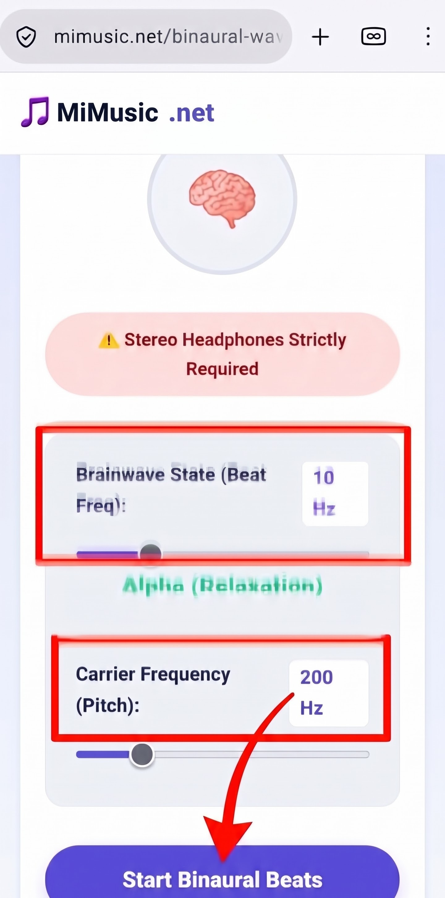

The Psychoacoustics of Brainwave Entrainment: How the Brain Hears Phantom Pulses
Discovered in 1839 by German physicist Heinrich Wilhelm Dove and popularized in the 1970s by biophysicist Gerald Oster, binaural beats are one of the most fascinating psychoacoustic illusions in sensory neuroscience. Unlike monaural beats—which occur when two competing sound waves physically collide in the air to produce acoustic amplitude fluttering—a binaural beat does not exist anywhere in the physical room. It is a subjective, cognitive artifact synthesized entirely within the human brainstem.
When you present two continuous, pure sinusoidal tones of slightly different frequencies separately to each ear via stereo headphones (for example, a 200 Hz tone to the left ear and a 210 Hz tone to the right ear), the two signals do not merge in the ear canal. Instead, neural signals from the auditory nerves travel up to the superior olivary complex—the brainstem structure responsible for sound localization and spatial orientation. Attempting to reconcile the phase discrepancy between both ears, the brain synthesizes a third phantom rhythm oscillating at the exact mathematical difference: 10 Hz. This neurological synchronization is known as the Frequency Following Response (FFR) or brainwave entrainment.
Step-by-Step Guide: Conducting a Calibrated Entrainment Session
Follow this structured routine to experience the full cognitive benefits of brainwave synchronization:

Put on your stereo headphones, choose your target mental state, and start the tone.
Step 1
Put On Stereo Headphones
Headphones are strictly mandatory. Binaural synthesis requires isolated stereo channels; room speakers blend waves in open air.
Step 2
Select Target Beat Offset
Use the top slider to choose your goal: 10 Hz for calm Alpha study, 6 Hz for Theta meditation, or 2 Hz for Delta sleep.
Step 3
Tune Carrier Pitch
Adjust the bottom slider between 150 Hz and 250 Hz until the humming tone feels soothing, natural, and non-fatiguing.
Step 4
Set Moderate Volume
Keep your device volume around 30% to 50%. Entrainment relies on phase alignment, not loudness. Listen for 15 to 30 minutes.
🌊 Mapping the EEG Frequency Bands
Human consciousness fluctuates continuously across distinct electrical frequency bands: Delta (1–3 Hz) governs deep slow-wave physical recovery; Theta (4–7 Hz) supports profound meditation and REM creativity; Alpha (8–13 Hz) establishes flow-state alertness and stress reduction; and Beta (14–30 Hz) sharpens critical logic and problem-solving.
🎛️ Carrier Pitch & Olive Complex Tracking
A crucial yet often overlooked parameter in brainwave synthesis is the carrier frequency—the base pitch carrying the beat. Lower carrier frequencies (between 150 Hz and 250 Hz) are significantly more effective for entrainment because human brainstem olivary neurons track cycle phase timing far more accurately in the lower spectrum.
🔬 Pure Mathematical Waveforms vs. Lossy MP3 Compression
Many pre-recorded binaural videos on YouTube or streaming sites suffer from heavy MP3/AAC compression algorithms. Lossy encoders intentionally discard subtle stereo phase discrepancies to save file size, which severely degrades or destroys the neural entrainment illusion:
- True 32-Bit Floating Point: Our engine synthesizes uncompressed sine waves locally via the browser's native Web Audio API.
- Zero Stereo Crosstalk: Dedicated channel mergers prevent channel bleeding, ensuring 100% clean phase delivery.
- 100% In-Memory Execution: Zero network bandwidth required once loaded; runs completely offline and privately.